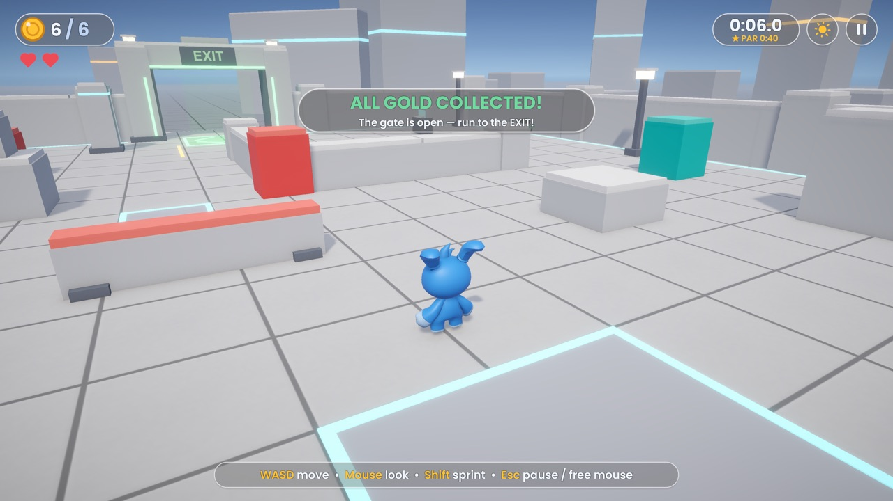

GOLD RUSH · Part 3
Gold and monsters
The arena now gets things to collect and things to run from. You will see how coins and power-ups are picked up, how the exit gate opens, and how the three monsters think, using a state machine and Unity's NavMesh.

1Where the gold and monsters come from
Open Assets/GoldRush/Scenes/Level1.unity. In the Hierarchy, open the level root (Level 1 - Training Yard) and then Gameplay. You will find small marker objects:
| Marker (component) | Prefab in Prefabs/Level/Gameplay/ | What appears there in Play mode |
|---|---|---|
CoinSpot | CoinSpot | A spinning gold coin |
MonsterSpawn | Monster_Slime, Monster_Ghost, Monster_MushroomKing | A monster. Its Type field picks which one. |
PowerUpSpot | PowerUp_Speed, PowerUp_Ghost, PowerUp_Magnet | A power-up orb. Its Type field picks which one. |
PlayerSpawn | PlayerSpawn | The hero's start point |
ExitGate | ExitGate | The EXIT gate |
When the level starts, GameManager walks over these markers and creates the real objects from code:
foreach (var c in scene.GetComponentsInChildren<CoinSpot>()) l.coinPoints.Add(c.transform.position);
foreach (var m in scene.GetComponentsInChildren<MonsterSpawn>())
{
Vector3 p = m.transform.position;
if (UnityEngine.AI.NavMesh.SamplePosition(p, out var hit, 3f, UnityEngine.AI.NavMesh.AllAreas)) p = hit.position;
l.enemyPoints.Add(p);
l.enemyTypes.Add(m.type);
if (m.type == EnemyType.Guard) l.guardHomes.Add(m.HomePosition);
}Data.cs. Changing coins = 6 in Data.cs only changes the text on the level card. To add gold, add a CoinSpot to the scene.2Picking things up without triggers
Many Unity tutorials use OnTriggerEnter for pickups. Gold Rush does something simpler: every frame, GameManager.Update() measures the distance from the hero to each coin. Close enough means collected.
for (int i = coins.Count - 1; i >= 0; i--)
{
var c = coins[i];
if (c == null || c.Collected) { coins.RemoveAt(i); continue; }
Vector3 d = c.transform.position - pp;
float sq = d.sqrMagnitude;
if (MagnetActive && sq < 11f * 11f)
{
float dist = Mathf.Sqrt(sq);
c.transform.position = Vector3.MoveTowards(c.transform.position, pp, (7f + (11f - dist) * 2.2f) * dt);
sq = (c.transform.position - pp).sqrMagnitude;
}
if (sq < 1.45f * 1.45f) { coins.RemoveAt(i); CollectCoin(c); }
}ppis the hero's position, 1 m above the feet.sqrMagnitudeis the distance squared. Comparingsq < 1.45f * 1.45fis the same as “distance < 1.45 m”, but it skips a square root.- The loop runs backwards so that
RemoveAt(i)does not skip the next coin.
| Check | Distance |
|---|---|
| Collect a coin | 1.45 m |
| Collect a power-up | 1.6 m |
| Magnet pulls coins | 11 m |
| Win at the open gate | 2.4 m |
| A monster catches you | 1.05 m (Mushroom King: 1.6 m) |
When the last coin is collected, AllCollected() opens the gate, shows “ALL GOLD COLLECTED!”, and makes every monster 10% faster (e.Enrage(1.1f)). That speed-up is on purpose: it makes the run to the exit exciting.
3The three power-ups
| Power-up | Lasts | What the code does |
|---|---|---|
| SPEED (cyan) | 6 s | SpeedMultiplier becomes 1.55. PlayerMotor multiplies the walk and sprint speed by it. |
| GHOST (purple) | 6 s | EnemyAI.Vision() returns false, so monsters cannot see you. The hero turns see-through. |
| MAGNET (red) | 8 s | Coins within 11 m fly to you (the code in step 2). |
switch (type)
{
case PowerType.Speed: SpeedLeft = SpeedDuration; desc = "Super speed!"; break;
case PowerType.Ghost: GhostLeft = GhostDuration; desc = "Monsters can't see you!"; break;
default: MagnetLeft = MagnetDuration; desc = "Gold flies to you!"; break;
}Each power-up is just a countdown: SpeedLeft, GhostLeft and MagnetLeft go down by Time.deltaTime every frame. While a countdown is above zero, the power is active (SpeedActive, GhostActive, MagnetActive).
4The exit gate
ExitGate.Create() builds the gate from simple shapes. It starts closed. Open() slides the door down into the floor over 1.2 seconds with a smooth curve, then hides it. After that, standing within 2.4 m of the gate's WinPoint calls Win() (you will meet Win() in Part 4).

5NavMesh: how monsters find their way
A NavMesh is a map of where a character can walk. A NavMeshAgent uses it to find a path around walls. Gold Rush uses the AI Navigation package (com.unity.ai.navigation).
- The level has a
NavMeshSurfacecomponent. It is set to collect Physics Colliders from its children. - The NavMesh is not saved in the scene.
GameManagerrebuilds it every time the level starts:// rebuild the NavMesh so students can move walls around freely foreach (var surface in scene.GetComponentsInChildren<Unity.AI.Navigation.NavMeshSurface>()) surface.BuildNavMesh(); - Each monster gets a
NavMeshAgentinEnemyAI.Create(). To move, the code callsagent.SetDestination(...).
6The monster brain: a state machine
A state machine means: the monster is always in exactly one state, and each state has rules for when to switch to another. EnemyAI.cs has six states:
enum S { Patrol, Alert, Chase, Search, Return, Stunned }| State | What the monster does | It switches when… |
|---|---|---|
| Patrol | Walks to random points, waits 0.8–2.4 s, picks a new point. | It sees you → Alert |
| Alert | Stops, shows a red !, plays the “alert” sound, turns toward you. | After 0.45 s → Chase |
| Chase | Runs at you. Updates its path every 0.12 s. | You are hidden for 2.2 s, or GHOST is on → Search. A guard too far from home → Return |
| Search | Walks to where it last saw you, shows a gold ?, looks around. | It sees you → Alert. Gives up → Patrol (guard: Return) |
| Return | Mushroom King only: walks back home. | Home → Patrol. Sees you near home → Alert |
| Stunned | After catching you: spins with a blue z. | After 2.6 s → Search |
In code, the state machine is a switch inside Update(). Here are the first two states:
switch (state)
{
case S.Patrol:
Wander();
if (canSee) Go(S.Alert);
break;
case S.Alert:
FaceTowards(lastSeen, dt);
if (stateTime > 0.45f) Go(S.Chase);
break;
// ... Chase, Search, Return, Stunned
}Go(newState) does the “on enter” work for a state: it changes the agent speed, stops or starts the agent, and shows the right bubble.
The three monsters are one script
Slime, Ghost and Mushroom King all use EnemyAI. Only their numbers are different, set in Configure():
| Monster | Patrol speed | Chase speed | Sees up to | View angle | Special |
|---|---|---|---|---|---|
🟢 Slime (Patroller) | 1.5 | 3.6 | 8.5 m | 130° in front | Easy to sneak past |
Ghost (Chaser) | 2.1 | 4.6 | 12 m | all around | Fast, hard to lose |
🟡 Mushroom King (Guard) | 1.2 | 4.2 | 9.5 m | 200° | Stays within 13 m of home |
All speeds are then multiplied by the level's enemySpeed (0.9 in Level 1 up to 1.12 in Level 4). For comparison, the hero walks at 5 and sprints at 8.2.
7How a monster sees you
Scripts/Gameplay/EnemyAI.csbool Vision(PlayerMotor p, GameManager gm)
{
if (gm.GhostActive) return false;
Vector3 eye = transform.position + Vector3.up * 1.6f;
Vector3 target = p.transform.position + Vector3.up * 1.1f;
Vector3 to = target - eye;
float dist = to.magnitude;
float range = state == S.Chase || state == S.Search ? loseRange : detectRange;
if (dist > range) return false;
Vector3 flat = new Vector3(to.x, 0, to.z).normalized;
bool close = dist < 3.2f;
if (!close && state != S.Chase && Vector3.Dot(transform.forward, flat) < fovCos) return false;
if (Physics.Raycast(eye, to / dist, dist - 0.3f, Physics.DefaultRaycastLayers, QueryTriggerInteraction.Ignore)) return false;
return true;
}Read it as four questions, in order:
- Is GHOST on? Then no.
- Are you too far? Then no. (A monster that is already chasing can see farther:
loseRange.) - Are you outside its view cone? Then no.
Vector3.Dotof two directions is 1 straight ahead, 0 to the side and −1 behind.fovCosis the cut-off. Closer than 3.2 m it always notices you. - Is a wall in the way?
Physics.Raycastshoots an invisible line from the eye to you. If it hits something, the monster cannot see you.
The monster asks this question every 0.15 s, not every frame, to save work.
8Try it
Stop Play mode before you change code. After each change, press Play again and watch what happens.
Move the gold (no code)
Open Level1.unity. Drag Prefabs/Level/Gameplay/CoinSpot onto Level 1 - Training Yard/Gameplay/Coins in the Hierarchy. (It must be somewhere under the level root, or it is ignored.) Place it somewhere in the arena and press Play in this scene. The coin counter now shows 0 / 7.
Add a ghost to Level 1 (no code)
The same way, drag Monster_Ghost onto Gameplay/Monsters. Level 1 suddenly has a fast hunter. Move a wall too: the NavMesh is rebuilt, so the monsters walk around it.
Blind slimes
In EnemyAI.cs, in Configure(), on the Patroller line, change Mathf.Cos(65f * Mathf.Deg2Rad) to Mathf.Cos(30f * Mathf.Deg2Rad) and detectRange = 8.5f to 5f. In Level 1 you can now walk right past the side of a slime.
Faster ghosts
On the Chaser line, change chaseSpeed = 4.6f to 6.5f. In Level 2 the ghost now catches you if you only walk (5). You have to sprint (8.2).
Super magnet
In GameManager.cs, set MagnetDuration = 15f. In the coin loop, replace the three 11f values with 20f. Coins now fly in from much farther away, and the MAGNET bar in the HUD lasts longer.
Longer stun
In GameManager.OnPlayerCaught(), change enemy.Stun(2.6f) to enemy.Stun(6f). After it hits you, the monster spins for 6 seconds, which gives you time to escape.
- I can explain why pickups use distance instead of triggers.
- I can name the six monster states and what makes each one change.
- I know that the NavMesh is rebuilt when the level starts, and that walls need colliders.